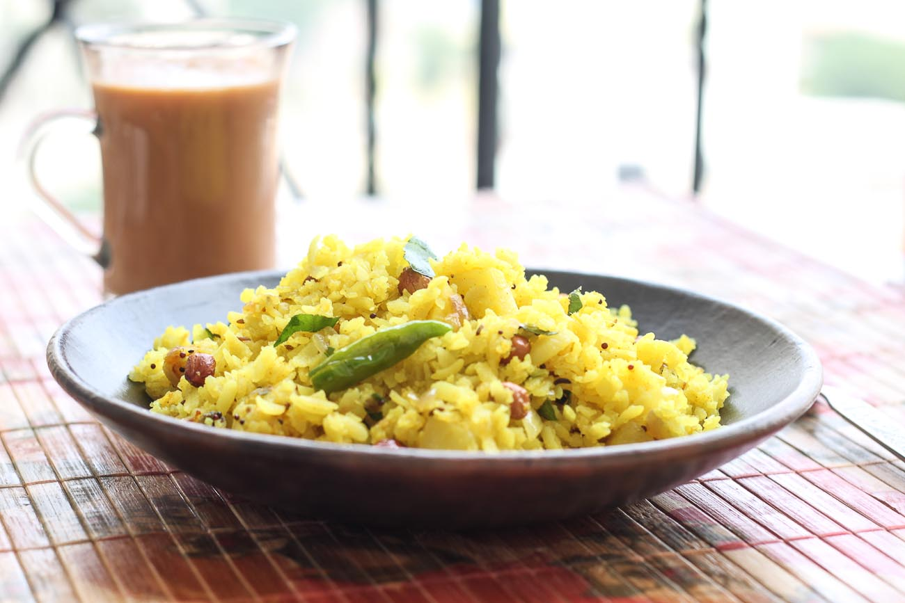

Gujrati Phoha

Description.
The aloo poha or batata poha is quite well known in Gujarat and Maharashtra. It is known as batata poha where batata
is “potato” and poha means “flattened rice”. Although this is a Gujarati version of aloo poha, the maharasthrian
poha is usually made with onions. Hence they are called “kanda pohe” where kanda = onions in marathi language. Aloo
poha is very popular breakfast dish in both these states and hence available in all local eatery in morning. The
canteens in the offices also serve aloo poha in breakfast as well as in evening snacks. In my home we make aloo poha
for evening snacks. Usually morning breakfast is bhakri or thepla.
Ingredients.
-
Main Ingredients
- Poha1 1/2 cups
- Potato 1 medium
- Onion 1 small
- Oil 1 tbsp
- Peanuts 3 tbsp
- Mustard seeds 1/2 tsp
- Curry leaves (kadi patta)6 leaves
- Green chilies 1 chilies finely chopped
- Turmeric powder 1/2 tsp
- Salt 1 1/2 tsp
- Sugar 1 tsp
- Lemon juice 1/2 lemon
-
For Garnishing
- sevt 2tbsp
- Pomegranate seeds (anaar dana)2 tbsp
- Fresh coriander (hara dhaniya)
Steps.
- off the potatoes and cut into small pieces. Also finely chop the onions and green chilies.
- Take beaten rice or poha in a strainer and rinse it thoroughly in running water for 2 to 3 times. Keep the
poha in strainer for 5 minutes so that all excess water gets strained out.
- Mix haldi (turmeric powder), sugar and salt in the poha while it is still in strainer.
- Squeeze half a lemon juice in poha mixture. Mix well using a spoon or hand and combine all spices in poha.
Keep aside.
- Now to make aloo poha heat oil in a kadhai / non stick pan. Once the oil is hot add mustard seeds (rai).
- Once the mustard seeds starts fluttering add curry leaves (kadi patta) and finely chopped green chilies.
Saute for few seconds.
- Add potato cubes in the oil and mix well. Let the potatoes gets cooked for 2-3 minutes.
- Now add finely chopped onions. Add salt for potato & onion only (we already added salt in poha) and mix
well.
- Let the onion and potato get saute for 2-3 minutes on medium flame.
- Now add roasted peanuts (shingdana) in onion & potato.
- Also add poha mixed with spices and combine well everything nicely.
- Cover the lid on kadhai / pan and cook for another 3-4 minutes until potatoes are nicely cooked.
- Aloo poha or batata poha are ready. Garnish the aloo poha with finely chopped coriander leaves (hara
dhaniya), some pomegranate seeds (anaar dana) and sev.
- Serve the poha hot or warm along with a cup of tea for breakfast or snacks.
Thank you for Reaching this website.